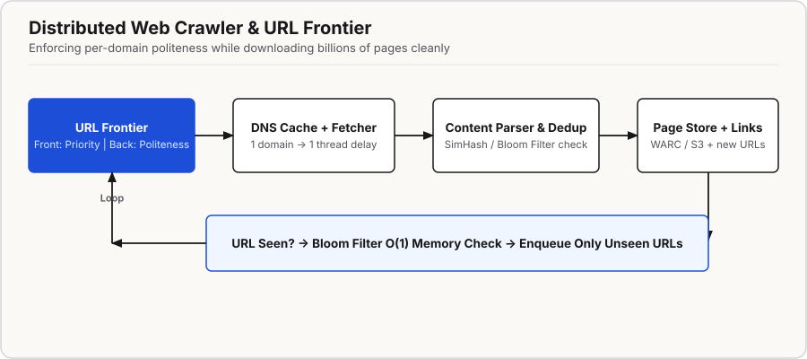

Module 36: System Design — Distributed Web Crawler
Comprehensive architectural breakdown of a large-scale Distributed Web Crawler (Googlebot style), covering the URL Frontier, Politeness Queues, Bloom Filter deduplication, DNS pre-resolution, and SimHash content deduplication.
Prerequisites
Before tackling the distributed web crawler, review these core modules:
- 02 - Domain Name System (DNS resolution, caching, and DNS lookup latency)
- 08 - Database Partitioning (Sharding crawled document repositories)
- 16 - Consistent Hashing (Distributing target hosts across crawler nodes)
- 20 - Fault Tolerance & Resilience (Worker crashes, timeouts, and spider traps)
ELI5 (30-Second Summary)
Imagine you want to read every book in a 1,000-story library. You start with book #1 on the shelf. In book #1, the author cites 5 other books. You write down those 5 titles on your "To-Read List" (URL Frontier).
When you finish book #1, you pick the next book from your list. But wait:
- What if three different books all cite the same book? You need a quick checklist to make sure you don't read the same book 50 times (Bloom Filter Deduplication).
- What if a mischievous book tells you to read Chapter 1, which tells you to read Chapter 2, which tells you to read Chapter 1 in an infinite loop (Spider Trap)?
- What if you storm into the library counter and demand 1,000 books in one second, crashing into the librarian (Host Politeness)?
A Distributed Web Crawler uses a polite, intelligent frontier queue system to discover, fetch, parse, and catalog billions of web pages across the entire internet without crashing websites or getting stuck in infinite loops!
Physical Analogy
Think of an International Fleet of Postal Explorers Mapping Uncharted Islands:
| Exploration Analogy | Distributed Web Crawler Concept | Technical Description |
|---|---|---|
| List of Target Islands to Visit | URL Frontier | Prioritized, politeness-controlled queue of URLs to crawl. |
| Explorers' Master Map of Visited Islands | Visited URL Store (Bloom Filter) | High-speed probabilistic filter checking if a URL was already crawled. |
| Ship Speed Limits per Harbor | Politeness Delay (1 request / sec / host) | Enforces crawl-delay to prevent overwhelming target web servers. |
| Harbor Rules Document on Dock | robots.txt Parser & Cache |
Respects webmaster access policies and forbidden directories. |
| Cataloging Flora and Fauna Specimens | HTML Parser & Content Extractor | Strips boilerplate, extracts text, and discovers new outbound hyperlinks. |
| Checking if Two Specimens are Identical | Content Fingerprinting (SimHash) | Detects duplicate or near-duplicate articles across different domains. |
The Problem It Solves
The World Wide Web contains tens of billions of publicly accessible web pages:
- Immense Scale: Crawling 1 billion web pages per month requires fetching ≈ 400 pages per second continuously 24/7.
- Politeness Requirements: A crawler that fires 100 simultaneous requests at a small mom-and-pop blog is indistinguishable from a Distributed Denial of Service (DDoS) attack.
- Spider Traps: Infinite dynamic calendar links (
/calendar?year=2026&month=13&day=...) or circular redirects can trap a crawler forever, exhausting memory and disk. - Duplicate Content: Over 30% of web content consists of mirrored pages, syndicated news stories, or URL parameter variations (
?ref=twitter). Storing duplicate copies wastes petabytes of storage.
Visual Architecture

flowchart TD
subgraph Frontier["1. URL Frontier (Prioritization & Politeness)"]
SeedURLs["Seed URLs"] --> IngressQueue["Priority Queues (F1, F2...)"]
IngressQueue --> PrioritySelector["Priority Bias Selector"]
PrioritySelector --> HostRouting["Host Mapping (Consistent Hashing)"]
HostRouting --> HostQueues["Per-Host FIFO Queues (Host1, Host2...)"]
HostQueues --> PolitenessDelay["Politeness Delay Manager (Delay / Host)"]
end
subgraph Fetcher["2. Fetching & Parsing Engine"]
PolitenessDelay --> Worker["Crawler Worker Thread"]
Worker --> DNSCache["Local DNS Cache (Pre-Resolved IPs)"]
Worker --> RobotsCache["Robots.txt Cache (Disallow Rules)"]
Worker --> Download["HTTP Fetcher (Stream Downloader)"]
Download --> HTMLParser["HTML & Link Parser"]
end
subgraph StoragePipeline["3. Deduplication & Storage"]
HTMLParser --> ContentDedup{"Content Fingerprint (SimHash)"}
ContentDedup -->|"Duplicate"| DiscardDoc["Discard Document"]
ContentDedup -->|"Unique"| DocStore[("Document Blob Store (GCS/S3)")]
HTMLParser --> ExtractLinks["Extracted Outbound URLs"]
ExtractLinks --> URLFilter{"Seen URL Filter (Bloom Filter)"}
URLFilter -->|"Already Seen"| DropURL["Drop URL"]
URLFilter -->|"New URL"| IngressQueue
endReal Numbers & System Sizing
Consider crawling 1 Billion Web Pages per month:
- Throughput Required:
- 1 Billion pages / (30 days × 86,400 s) ≈ 386 pages/second.
- Peak crawl throughput (2×): ≈ 800 pages/second.
- Bandwidth Sizing:
- Average web page size (HTML + metadata): 100 KB.
- Ingress bandwidth: 800 pages/s × 100 KB = 80 MB/s = 640 Mbps continuous network ingress.
- Storage Sizing (1 Month Retention):
- Total raw HTML storage: 1B × 100 KB = 100 Terabytes/month.
- Compressed storage (gzip ≈ 3× reduction): ≈ 33 TB/month.
- Bloom Filter for URL Deduplication:
- Tracking 1 billion URLs with a false-positive rate p = 0.01 (1%):
- Bits required: m = -(n \ln p) / ((\ln 2)^2) ≈ (1B × 4.605) / (0.48) ≈ 9.6 billion bits ≈ 1.2 GB of RAM!
- 1.2 GB of RAM easily fits inside a single server or Redis instance.
Deep Dive: Under the Hood
1. The URL Frontier Design
Mercator-style URL Frontiers split queue management into two distinct layers:
- Prioritization Layer (Prioritizer): Multiple queues (F1, F2, …, Fk) where higher priority is given to authoritative domains (Wikipedia, BBC) and frequently updated pages.
- Politeness Layer (Politeness Queues):
- URLs are partitioned into separate queues by host domain (
host = parse_domain(url)). - A thread-safe scheduler ensures that at most one connection is made to
example.comper second, storing thelast_accessed_timestampper host in an in-memory heap or queue.
- URLs are partitioned into separate queues by host domain (
2. URL Normalization
Before checking if a URL has been seen, it must be canonicalized:
- Convert scheme and host to lowercase:
HTTP://Example.com/→http://example.com/ - Strip default ports:
:80on HTTP,:443on HTTPS. - Remove tracking fragments and query parameters:
/page#section→/page, strip?utm_source=.... - Resolve relative paths:
/news/../sports/index.html→/sports/index.html.
3. Spider Trap Avoidance
- Path Depth Limit: Reject URLs with depth > 10 (
/a/b/c/d/e/f/g/h/i/j/k). - Robots Exclusion Standard: Check
/robots.txtbefore crawling any path. - Strict Fetch Timeouts: Set aggressive socket timeouts (e.g., 5 seconds) to avoid hanging on slow HTTP streams.
Trade-offs & Decision Matrix
| Dimension | Breadth-First Search (BFS) | Depth-First Search (DFS) | Priority-Biased Politeness Frontier |
|---|---|---|---|
| Domain Coverage | Broad coverage of shallow pages | Gets trapped deep in dynamic directories | Controlled balance of high-value sites |
| Server Politeness | Hits the same host repeatedly (DDoS risk) | Pounds single host consecutively | Guaranteed inter-request delay per host |
| Crawl Trap Resilience | Poor (fills memory with infinite links) | Worst (dives endlessly into loops) | Excellent (depth + length caps) |
| Engineering Complexity | Minimal (single queue) | Minimal (single stack) | High (dual-tier priority + politeness queues) |
Common Pitfalls & Anti-Patterns
- DNS Bottleneck: Making a synchronous DNS query for every single URL introduces a 20 - 100 ms latency penalty per link. Rule: Maintain a dedicated local in-memory DNS cache (e.g., dnsmasq or custom DNS pool) with pre-resolved IP mappings.
- Ignoring
robots.txt: Crawling web servers without checkingrobots.txtviolates web conventions and can result in legal notices and immediate IP blacklisting. Cacherobots.txtper host with a 24-hour TTL. - Exact-Match Content Comparison: Checking if page HTML is 100% identical via SHA-256 fails because minor changes (e.g., dynamic timestamps or copyright years) alter the cryptographic hash. Use 64-bit SimHash or MinHash to detect near-duplicate pages.
Try It Yourself
A runnable, zero-dependency Python simulation demonstrating a multi-threaded web crawler with per-host politeness throttling, Bloom filter URL deduplication, robots.txt compliance, and HTML parsing is included in this directory.
Run the simulation:
python demo.py
Production References & Further Reading
- Mercator: A Scalable, Extensible Web Crawler (Heydon & Najork, 1999)
- Google Engineering: Googlebot and Web Crawling Architecture
- Alex Xu: System Design Interview Vol 1 - Chapter 9 (Design a Web Crawler)
Top 5 Interview Questions with Model Answers
Q1: How does a Web Crawler guarantee politeness so it doesn't DDoS target websites?
Model Answer: Politeness is enforced via the URL Frontier's Politeness Queue Architecture:
- URLs are mapped to host-specific FIFO queues based on domain name (e.g.,
queue:nytimes.com,queue:wikipedia.org). - A dedicated scheduler assigns worker threads to host queues using a priority heap tracking
next_allowed_crawl_time. - When a worker finishes fetching from
nytimes.com, it recordstimestamp + delay(typically 500ms to 1s, or specified byCrawl-delayinrobots.txt). No worker is permitted to fetch fromnytimes.comuntil that cooldown elapses.
Q2: How do you detect and avoid "Spider Traps"?
Model Answer: Spider traps are websites generating infinite URLs dynamically (e.g., infinite calendar pages or recursive directory links). We combat traps using multiple heuristic filters:
- URL Length & Depth Capping: Discard URLs exceeding 255 characters or path depth > 8 segments.
- Repeating Pattern Detection: Regular expression filters detecting repeating path segments (
/blog/archive/blog/archive/...). - Per-Host Page Limits: Cap the maximum number of pages crawled per domain (e.g., 50,000 pages max per site).
- Content-Based Near-Duplicate Detection: Using SimHash to identify when structurally identical pages are being dynamically generated.
Q3: Why is a Bloom Filter preferred over a Hash Set for tracking visited URLs?
Model Answer: Scale. Tracking 10 billion URLs in a standard Python/Java Hash Set (each URL ≈ 80 bytes) requires at least 800 GB to 1.2 TB of RAM due to object pointer overhead. A Bloom Filter is an in-memory bit array with multiple cryptographic hash functions:
- Requires only ≈ 9.6 bits per item for a 1% false positive rate.
- 10 billion URLs require only ≈ 12 GB of RAM.
- While a Bloom filter can have false positives (falsely assuming a new URL was visited), in web crawling a 0.5% skip rate is completely acceptable compared to the 98% savings in memory infrastructure.
Q4: How do you identify duplicate or near-duplicate web pages across different domains?
Model Answer: Using SimHash (Locality-Sensitive Hashing):
- Tokenize document text into words/n-grams.
- Hash each word into a 64-bit binary vector.
- Compute a weighted sum vector across all words (incrementing bit positions for 1s, decrementing for 0s).
- The final 64-bit SimHash fingerprint has the mathematical property that documents with 90%+ identical content differ by only a few bits (Hamming distance ≤ 3).
- Matching documents with Hamming distance ≤ 3 flags near-duplicates (e.g., republished syndicated news articles) without performing full text comparison.
Q5: How do you handle DNS lookup bottlenecks when fetching hundreds of pages per second?
Model Answer: Standard synchronous DNS resolution takes 20ms to 100ms per domain, which paralyzes crawler worker threads. We resolve this by:
- Local DNS Caching: Maintaining a high-throughput in-memory DNS cache mapping domains to resolved IP addresses with an asynchronous refresh thread.
- DNS Pre-fetching: When outbound URLs are parsed from a page, background workers immediately initiate non-blocking asynchronous DNS queries (
getaddrinfoasync) so IPs are already cached when the URL reaches the head of the frontier queue.
Check Yourself Quiz
1. What is the primary purpose of the Politeness layer in the URL Frontier?
A) To translate foreign languages.B) To ensure target web servers are not overwhelmed with concurrent requests from the crawler.
C) To remove CSS files.
D) To encrypt web pages.
Answer: B. Politeness queues throttle requests per host (typically 1 req/sec) to avoid accidental Denial of Service.
2. Why is SimHash preferred over SHA-256 for document deduplication?
A) SimHash is faster to compute.B) SHA-256 changes completely on a single character difference, whereas SimHash preserves similarity, allowing near-duplicate detection.
C) SHA-256 only works on numbers.
D) SimHash encrypts the URL.
Answer: B. Locality-Sensitive Hashing (SimHash) produces fingerprints where small text variations yield small Hamming distances.
3. What file does a polite web crawler inspect first before requesting pages from a domain?
A) `/index.html`B) `/robots.txt`
C) `/favicon.ico`
D) `/sitemap.xml`
Answer: B. `/robots.txt` specifies webmaster crawl permissions, disallow paths, and crawl delays.
4. How does URL Normalization prevent redundant crawling?
A) By converting relative paths, lowercase schemes, and removing query fragments so identical pages map to the same URL string.B) By deleting foreign characters.
C) By compressing URLs with gzip.
D) By purchasing new domain names.
Answer: A. Normalization canonicalizes URLs (`HTTP://Site.com/a#sec` → `http://site.com/a`) so duplicates hit the cache.
5. In a Bloom Filter, what does a positive result ("Found") indicate?
A) The item is 100% guaranteed to be in the set.B) The item is probably in the set (with a small configurable false positive probability), but never a false negative.
C) The item was deleted.
D) The server is down.
Answer: B. Bloom filters can yield false positives, but never false negatives ("Never False Negative, Sometimes False Positive").